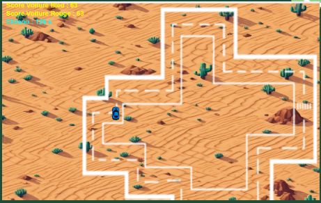
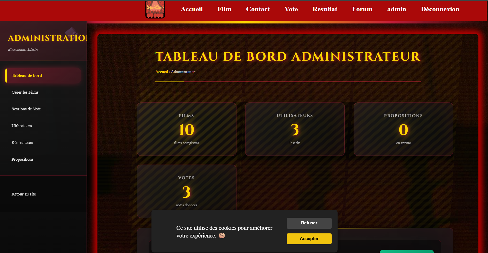
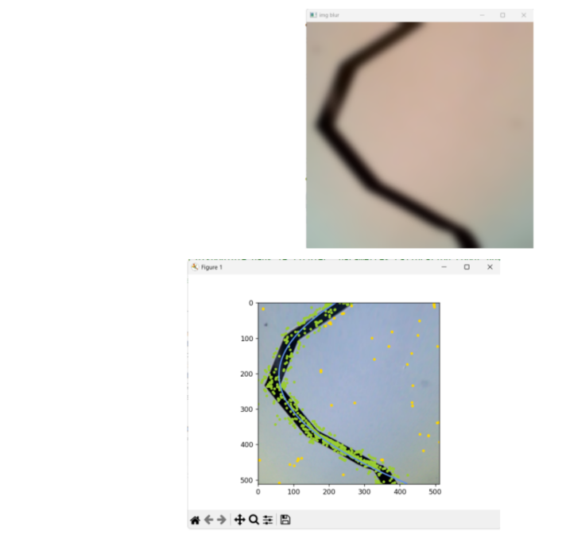
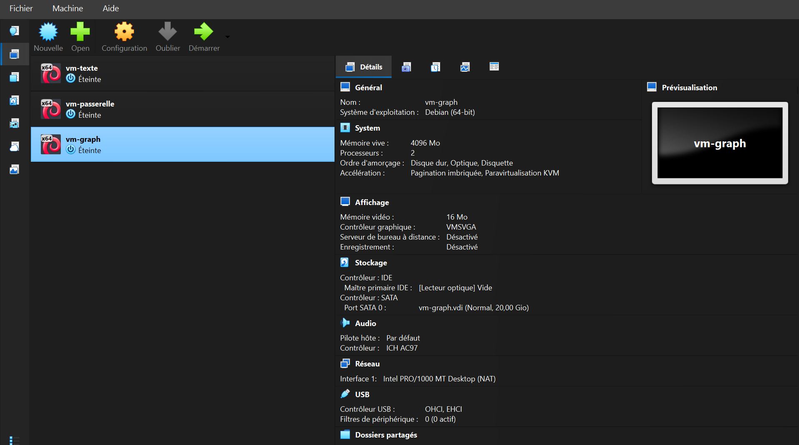
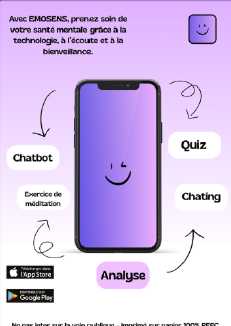

Les 6 Compétences du BUT Informatique
Le BUT Informatique s'articule autour de 6 compétences clés que je développe à travers mes SAÉ (Situations d'Apprentissage et d'Évaluation).
Réaliser un développement d'application
Développer des applications informatiques simples
Développer des applications informatiques simples, maîtriser l'architecture du Web, utiliser des méthodes et des outils de conception UML.
Mes SAÉ pour cette compétence

Voiture de course
Dans le cadre de la SAE, nous avons élaboré une interface homme-machine, qui est un jeu vidéo. Ce projet a été l’occasion d’intervenir surdifférents sujets comme la gestion des voitures. J’ai pu ainsi renforcer mes compétencestechniques dans le cadre d’un projet concret,visuel et formateur et enrichissant.
- Java

StarCiné
StarCiné est une application web qui vise à rassembler une communauté de cinéphiles et leur permettre de voter et de classer leurs films préférés de façon démocratique. Ce projet a mergé à une époque où les plateformes de streaming et les réseaux sociaux sont les principaux lieux de discussion autour du cinéma, et où il n'existe pas de plateforme dédiée au vote communautaire transparent.
- PHP
- HTML
- CSS
- JAVA SCRIPT
Mon analyse réflexive
Quelle évolution ai-je constaté dans ma maîtrise de cet apprentissage ?
Au début de ma formation, je savais surtout développer de petites applications en suivant des consignes précises. Grâce aux SAÉ, j’ai appris à concevoir une application de manière plus complète, depuis l’analyse du besoin jusqu’aux tests finaux. Dans la SAÉ 2.01 Voiture de course, j’ai développé une interface graphique en Java et géré la logique du jeu (déplacement des voitures, collisions, score, etc.). Cela m’a permis de mieux structurer mon code avec des classes et des objets, et de comprendre l’importance de séparer la logique métier de l’affichage. Dans la SAÉ S3 StarCiné, j’ai travaillé sur une application web complète en PHP, HTML, CSS et JavaScript. J’ai appris à gérer les interactions entre le front-end et le back-end, à manipuler une base de données et à organiser le projet selon une architecture plus propre. J’ai aussi amélioré mes compétences en travail d’équipe et en gestion de projet.
Quelles ressources ai-je mobilisées parmi les enseignements reçus ?
J’ai principalement mobilisé les ressources suivantes :
R1.02 Développement d’interfaces web : HTML, CSS et JavaScript.
R2.01 Développement orienté objets : conception orientée objet et UML.
R2.02 Développement d’applications avec IHM : création d’interfaces graphiques en Java.
R2.03 Qualité de développement : tests, bonnes pratiques et organisation du code.
Les TP et projets réalisés en cours ont également servi de base pour résoudre des problèmes rencontrés pendant les SAÉ.
Est-ce que cela m'a permis de mieux les comprendre / maîtriser ?
Oui, les SAÉ m’ont permis de passer de la théorie à la pratique. Par exemple, les notions de programmation orientée objet vues en cours sont devenues beaucoup plus concrètes lorsque j’ai dû créer des classes pour les voitures, les joueurs et les éléments du jeu dans la SAÉ 2.01. De même, les concepts liés au développement web (requêtes HTTP, formulaires, manipulation du DOM, interaction avec une base de données) ont été mieux assimilés grâce à la réalisation de StarCiné. Le fait de devoir intégrer plusieurs technologies dans un même projet m’a aidé à comprendre leur rôle respectif et la manière dont elles communiquent entre elles.
Quelles ressources ai-je dû chercher en plus de celles reçues lors des enseignements ?
Pour compléter les cours, j’ai utilisé la documentation officielle de Java, PHP et JavaScript, des tutoriels vidéo et articles techniques pour approfondir certains points (gestion des événements graphiques, requêtes SQL, sécurisation des formulaires, etc.). des forums comme Stack Overflow pour résoudre des problèmes spécifiques rencontrés pendant le développement, des exemples de projets open source afin de mieux comprendre l’organisation d’une application web.
Si c'était à refaire, qu'est-ce que je changerais ?
Si c'était à refaire, je commencerais le projet plus tôt et j'organiserais davantage le travail dès le début. Nous avons pris du retard au lancement du projet, ce qui nous a obligés à travailler dans des délais plus serrés sur certaines phases de développement. Malgré cela, nous avons réussi à atteindre les objectifs fixés et à produire une application fonctionnelle. Cette expérience m'a appris l'importance de la planification et de l'anticipation dans la gestion d'un projet informatique. À l'avenir, je veillerai à établir un calendrier plus précis afin de répartir la charge de travail de manière plus régulière tout au long du projet.
Optimiser des applications informatiques
Appréhender et construire des algorithmes
Cette compétence m’a permis d’approfondir les fondements mathématiques et statistiques nécessaires à l’informatique, de comprendre les systèmes cryptographiques, de modéliser des problèmes via l’algorithmique et l’UML, et de traiter des images à l’échelle pixel.
Mes SAÉ pour cette compétence

TP Traitement d'image et suivi de ligne
Dans le cadre de ce TP, nous avons développé une chaîne complète de traitement d'image permettant à un robot autonome de suivre une ligne au sol. Le projet comprenait la calibration de la caméra, la correction des distorsions optiques, la transformation de perspective en vue aérienne ainsi que la détection et la modélisation de la trajectoire grâce à l'algorithme RANSAC. Ce projet m'a permis de découvrir des techniques avancées de vision par ordinateur et d'optimisation des traitements de données.
- PYTHON
- OpenCV
- Scikit-Learn

My Pulse
Dans le cadre de cette SAÉ, nous avons repris une application web existante afin d'analyser son fonctionnement et d'améliorer sa sécurité. L'objectif était d'identifier les vulnérabilités potentielles, de corriger certaines faiblesses du code et de mettre en œuvre des bonnes pratiques permettant de protéger davantage les données et les utilisateurs. Ce projet m'a permis de comprendre les enjeux liés à la maintenance logicielle et à la sécurisation des applications. J'ai appris à lire et comprendre un code déjà développé, à repérer les points d'amélioration et à proposer des solutions adaptées pour rendre l'application plus robuste et plus fiable.
- PHP
- MySQL
- Sécurité Web
- Maintenance Applicative
Mon analyse réflexive
Quelle évolution ai-je constaté dans ma maîtrise de cet apprentissage ?
Au cours de cette compétence, j'ai appris à résoudre des problèmes plus complexes en choisissant des méthodes et des structures adaptées aux données manipulées. Le TP de traitement d'image m'a permis de découvrir les principes de la vision par ordinateur et de comprendre comment optimiser le traitement d'informations visuelles afin qu'un robot puisse interpréter son environnement. J'ai notamment travaillé sur la calibration d'une caméra, la correction des distorsions, la transformation de perspective et la détection automatique d'une ligne à suivre. L'utilisation de l'algorithme RANSAC m'a permis de comprendre l'intérêt des méthodes robustes capables d'ignorer les données aberrantes tout en produisant un résultat fiable. Le projet UML réalisé pour les votes m'a également aidée à développer ma capacité à structurer les données et à concevoir des modèles cohérents avant le développement d'une application.
Quelles ressources ai-je mobilisées parmi les enseignements reçus ?
J'ai principalement mobilisé les ressources suivantes :
R2.01 Développement orienté objets : modélisation UML et structuration des applications.
R2.03 Qualité de développement : organisation du code et bonnes pratiques.
R3.C2 Développement efficace : optimisation des traitements et performances.
R3.C3 Analyse : résolution de problèmes complexes et choix des solutions adaptées.
Les enseignements de mathématiques discrètes et les travaux pratiques de traitement d'image m'ont également permis d'acquérir les bases nécessaires à la compréhension des algorithmes utilisés.
Est-ce que cela m'a permis de mieux les comprendre / maîtriser ?
Oui, la réalisation de StarCiné m'a permis d'appliquer concrètement les notions vues en cours. La conception des diagrammes UML et de la base de données m'a aidée à mieux comprendre les relations entre les différentes entités du système. J'ai également appris à optimiser certaines requêtes et à organiser le code afin de rendre l'application plus claire et plus facile à faire évoluer.
Quelles ressources ai-je dû chercher en plus de celles reçues lors des enseignements ?
Pour compléter les cours, j'ai consulté :
la documentation PHP.
la documentation MySQL.
des tutoriels sur UML et la conception de bases de données.
des forums techniques comme Stack Overflow.
des exemples de projets web similaires.
Ces ressources m'ont permis d'approfondir certains aspects techniques rencontrés pendant le développement.
Si c'était à refaire, qu'est-ce que je changerais ?
Si c'était à refaire, je consacrerais davantage de temps à la phase de conception avant de commencer le développement. Même si la modélisation UML nous a permis de structurer le projet, une réflexion plus approfondie sur certaines fonctionnalités et sur l'organisation de la base de données aurait facilité certaines étapes de l'implémentation. Cela nous aurait également permis d'anticiper certaines difficultés rencontrées au cours du développement et de rendre l'application plus facilement évolutive. Malgré cela, ce projet a été très formateur et m'a permis d'acquérir une meilleure méthodologie de travail ainsi qu'une meilleure compréhension des différentes étapes de conception d'une application.
Administrer des systèmes informatiques communicants
Installer, configurer et maintenir des systèmes et réseaux
Installer, configurer et mettre en œuvre des éléments d'infrastructure et différents services, maîtriser l'administration des systèmes communicants.
Mes SAÉ pour cette compétence

Dans le cadre de cette activité, j'ai appris à mettre en place et administrer des environnements virtualisés à l'aide de VirtualBox. J'ai créé plusieurs machines virtuelles sous Linux afin de simuler un réseau complet et expérimenter différentes configurations système et réseau. Ce travail m'a permis de mieux comprendre le fonctionnement des infrastructures informatiques, la communication entre machines et l'administration d'un environnement virtualisé. J'ai notamment configuré différents modes réseau, réalisé des connexions à distance via SSH et vérifié le bon fonctionnement des échanges entre les machines virtuelles. Cette expérience m'a permis de développer mes compétences en administration système et en gestion des services réseau.
- VirtualBox
- Ubuntu
- Debian
- SSH
- Réseaux NAT et Pont
Sécurisation d’un site web local
Cette SAÉ avait pour objectif de renforcer la sécurité d'un site web hébergé localement sous Linux. J'ai participé à la configuration d'Apache, à la mise en place d'un certificat SSL et à la sécurisation des communications en utilisant le protocole HTTPS. Ce projet m'a permis de mieux comprendre les mécanismes de chiffrement des échanges, le rôle des certificats numériques ainsi que les bonnes pratiques de sécurisation d'un serveur web. J'ai également utilisé Wireshark afin d'observer le trafic réseau et d'analyser les différentes étapes de l'établissement d'une connexion sécurisée. Cette expérience a renforcé mes compétences en administration système, en configuration de services réseau et en cybersécurité.
- Apache 2
- OpenSSL
- Wireshark
- Linux
- HTTPS
Mon analyse réflexive
Quelle évolution ai-je constaté dans ma maîtrise de cet apprentissage ?
Au cours de cette compétence, j'ai développé mes connaissances en administration système, en virtualisation et en sécurisation des services réseau. Au début, je maîtrisais principalement les bases de Linux, mais les différents TP et projets m'ont permis de gagner en autonomie dans la configuration et l'administration d'environnements plus complexes. L'utilisation de VirtualBox m'a permis de créer et configurer plusieurs machines virtuelles, de comprendre le fonctionnement des différents modes réseau et de mettre en place des communications entre plusieurs systèmes. La SAÉ de sécurisation d'un site web local m'a également permis de découvrir les mécanismes de chiffrement, la configuration d'Apache ainsi que la mise en œuvre du protocole HTTPS à l'aide de certificats SSL.
Quelles ressources ai-je mobilisées parmi les enseignements reçus ?
J'ai principalement mobilisé les ressources suivantes :
Les cours d'administration système sous Linux.
Les travaux pratiques de virtualisation avec VirtualBox.
Les enseignements liés aux réseaux informatiques.
Les TP de sécurisation des services web.
Les séances consacrées à Apache, OpenSSL et Wireshark.
Ces ressources m'ont permis d'acquérir les bases nécessaires à l'installation, la configuration et la sécurisation d'infrastructures informatiques.
Est-ce que cela m'a permis de mieux les comprendre / maîtriser ?
Oui, ces projets m'ont permis de mettre en pratique les notions vues en cours dans des situations concrètes. La création de machines virtuelles et la configuration de leur réseau m'ont aidée à mieux comprendre le fonctionnement des infrastructures informatiques et des communications entre systèmes. La mise en place d'un site sécurisé avec HTTPS m'a également permis de mieux comprendre le rôle des certificats SSL, le fonctionnement du protocole TLS ainsi que les bonnes pratiques de sécurisation des services web. L'analyse du trafic avec Wireshark a rendu ces notions beaucoup plus concrètes.
Quelles ressources ai-je dû chercher en plus de celles reçues lors des enseignements ?
Pour compléter les enseignements, j'ai consulté la documentation officielle d'Apache, d'OpenSSL et de VirtualBox. J'ai également utilisé des tutoriels en ligne et des forums techniques afin de résoudre certaines difficultés liées à la configuration des serveurs, des certificats SSL et des paramètres réseau. Ces recherches m'ont permis d'approfondir ma compréhension des outils utilisés et d'acquérir davantage d'autonomie dans la résolution de problèmes techniques.
Si c'était à refaire, qu'est-ce que je changerais ?
Si c'était à refaire, je consacrerais davantage de temps à explorer des configurations réseau plus avancées et à approfondir certains mécanismes de sécurité. J'aimerais notamment expérimenter davantage de scénarios de déploiement et de sécurisation afin d'élargir ma compréhension des infrastructures informatiques. Malgré cela, ces projets m'ont permis d'acquérir des compétences solides en administration système, en virtualisation et en sécurisation des services réseau.
Gérer des données de l'information
Concevoir et mettre en place des bases de données
Concevoir et développer des applications communicantes, comprendre et maîtriser l'écosystème et les référentiels des données.
Mes SAÉ pour cette compétence
Projet Aéroport
Dans le cadre de ce projet, j'ai développé une application Java permettant de gérer des vols à travers une interface graphique connectée à une base de données relationnelle. L'application permet d'ajouter, rechercher, modifier et supprimer des vols tout en assurant la gestion des droits d'accès grâce à un espace administrateur sécurisé. Ce projet m'a permis de mettre en pratique la conception de bases de données, l'utilisation de requêtes SQL ainsi que l'interconnexion entre une application Java et une base de données via JDBC. J'ai également travaillé sur la validation des données saisies et la restitution des informations à travers une interface utilisateur.
- MySQL
- JDBC
- MVC

Conception d'une base de données relationnelle
Dans le cadre de cette SAÉ, nous avons conçu avec mon binôme une base de données complète destinée à être utilisée par une application de gestion. Nous avons commencé par réaliser un modèle Entité-Association afin d'identifier les différentes entités, leurs relations et les cardinalités associées. Ce modèle a ensuite été transformé en schéma relationnel à l'aide de MySQL Workbench. Cette SAE m'a permis d'approfondir mes compétences en modélisation des données, en conception de bases de données et en mise en place de relations cohérentes entre les différentes tables. La base créée a ensuite été connectée directement à l'application Java développée dans le projet.
- MySQL
- MySQL WorkbenchC
- Modèle Entité-Association
- JDBC
Mon analyse réflexive
Quelle évolution ai-je constaté dans ma maîtrise de cet apprentissage ?
Au cours de cette compétence, j'ai appris à concevoir et exploiter des bases de données de manière plus structurée. Au début, je maîtrisais principalement les requêtes SQL simples, mais ces projets m'ont permis de comprendre l'ensemble du processus de conception, depuis l'analyse des besoins jusqu'à l'intégration dans une application. Le projet Aéroport m'a permis de manipuler des données réelles à travers une interface graphique et de mettre en œuvre des opérations de recherche, d'ajout, de modification et de suppression. La conception de la base de données m'a également permis de mieux comprendre l'organisation des données et les relations entre les différentes entités.
Quelles ressources ai-je mobilisées parmi les enseignements reçus ?
J'ai principalement mobilisé les ressources suivantes :
Les cours de bases de données relationnelles.
Les enseignements de modélisation des données.
Les travaux pratiques SQL et MySQL.
Les cours de développement Java.
Les enseignements portant sur JDBC et l'accès aux bases de données.
Ces ressources m'ont permis d'acquérir les connaissances nécessaires pour concevoir, implémenter et exploiter une base de données relationnelle.
Est-ce que cela m'a permis de mieux les comprendre / maîtriser ?
Oui, ces projets m'ont permis de mettre en pratique les notions étudiées en cours. La réalisation du modèle Entité-Association puis sa transformation en schéma relationnel m'ont aidée à mieux comprendre la structuration des données. L'intégration de la base dans une application Java m'a également permis de mieux maîtriser les requêtes SQL, les relations entre les tables ainsi que les mécanismes d'accès et de gestion des données.
Quelles ressources ai-je dû chercher en plus de celles reçues lors des enseignements ?
Pour compléter les enseignements, j'ai consulté la documentation MySQL et JDBC, ainsi que plusieurs tutoriels consacrés à la modélisation de bases de données et à l'écriture de requêtes SQL. J'ai également utilisé des forums techniques afin de résoudre certaines difficultés liées aux connexions entre l'application Java et la base de données ainsi qu'à la gestion des requêtes plus complexes.
Si c'était à refaire, qu'est-ce que je changerais ?
Si c'était à refaire, je consacrerais davantage de temps à la phase de modélisation afin d'anticiper certains besoins futurs de l'application. Une réflexion plus approfondie sur l'organisation des données et les relations entre les tables aurait permis de faciliter certaines évolutions du projet. Malgré cela, cette expérience m'a permis de renforcer mes compétences en conception de bases de données, en SQL et en développement d'applications connectées à une base de données.
Conduire un projet
Satisfaire les besoins des utilisateurs
Identifier les besoins métiers des clients et des utilisateurs, appliquer une démarche de suivi de projet et maîtriser les méthodes de gestion de projet
Mes SAÉ pour cette compétence

Conduite de projet web
Dans le cadre de cette SAÉ, j'ai travaillé en binôme sur le développement d'un site web pour une application de vote. Ce projet m'a permis de découvrir les différentes étapes de la conduite d'un projet informatique, depuis l'analyse des besoins jusqu'à la livraison du produit final. J'ai participé à la définition des fonctionnalités attendues, à l'organisation du travail, à la répartition des tâches ainsi qu'au suivi de l'avancement du projet. Cette expérience m'a permis de mieux comprendre l'importance de la communication, de la planification et de la coordination au sein d'une équipe.
- Git
- Discord
- Trello
Étude des processus et gestion de projet
Au cours de cette compétence, j'ai étudié les méthodes permettant d'analyser et de représenter les processus d'une organisation. J'ai appris à identifier les acteurs, les activités et les flux d'information afin de mieux comprendre le fonctionnement d'une structure et les besoins associés. Cette approche m'a permis de mieux formaliser les besoins des utilisateurs, d'évaluer la faisabilité de certaines solutions et d'adopter une démarche plus rigoureuse dans l'organisation des projets. J'ai également découvert les principes des méthodes agiles ainsi que différents outils de suivi de projet.
- Trello
- Gantt Project
- Méthodes Agiles
- Scrum
Mon analyse réflexive
Quelle évolution ai-je constaté dans ma maîtrise de cet apprentissage ?
Au cours de cette compétence, j'ai appris à mieux organiser et piloter un projet informatique. Au début, je me concentrais principalement sur les aspects techniques du développement, mais j'ai progressivement compris l'importance de l'analyse des besoins, de la planification et du suivi des différentes étapes du projet. La SAÉ de développement web m'a permis de travailler en équipe tout en respectant un cahier des charges précis. J'ai appris à répartir les tâches, à suivre l'avancement du projet et à prendre en compte les besoins des utilisateurs dès les premières phases de conception. Cette expérience m'a également permis de développer mes capacités de communication et de coordination.
Quelles ressources ai-je mobilisées parmi les enseignements reçus ?
J'ai principalement mobilisé les ressources suivantes :
Les cours de gestion de projet.
Les enseignements sur les méthodes agiles.
Les travaux pratiques utilisant Trello et Gantt Project.
Les cours portant sur l'analyse des besoins et la modélisation des processus.
Les projets réalisés en équipe durant la formation.
Ces ressources m'ont permis d'acquérir les méthodes nécessaires pour organiser, planifier et suivre efficacement un projet informatique.
Est-ce que cela m'a permis de mieux les comprendre / maîtriser ?
Oui, la mise en pratique au travers des projets m'a permis de mieux comprendre les notions étudiées en cours. La gestion concrète des tâches, des délais et des livrables a donné du sens aux méthodes de gestion de projet vues en formation. J'ai également compris l'importance de formaliser les besoins des utilisateurs avant de commencer le développement afin de limiter les erreurs et les modifications importantes en cours de projet.
Quelles ressources ai-je dû chercher en plus de celles reçues lors des enseignements ?
Pour compléter les enseignements, j'ai consulté des documentations et tutoriels concernant les méthodes agiles, Scrum ainsi que les outils de gestion de projet collaboratifs. J'ai également effectué des recherches sur les bonnes pratiques en matière d'organisation d'équipe, de suivi des tâches et de rédaction de documentation technique. Ces ressources m'ont permis d'améliorer ma méthodologie de travail et de mieux comprendre certains aspects de la conduite de projet.
Si c'était à refaire, qu'est-ce que je changerais ?
Si c'était à refaire, je consacrerais davantage de temps à la phase de planification dès le début du projet. Une organisation encore plus détaillée des tâches et des échéances permettrait d'anticiper certaines difficultés et de répartir plus efficacement la charge de travail. Malgré cela, cette expérience m'a permis de développer une meilleure vision globale d'un projet informatique et de renforcer mes compétences en gestion, en communication et en travail d'équipe.
Travailler dans une équipe informatique
Collaborer efficacement au sein d'une équipe
Acquérir, développer et exploiter les aptitudes nécessaires pour travailler efficacement dans une équipe informatique, maîtriser les outils collaboratifs.
Mes SAÉ pour cette compétence

Présentation vulgarisée
Dans le cadre d'un exercice oral, j'ai présenté le fonctionnement d'une application fictive à un public non spécialiste. L'objectif était de rendre un sujet technique accessible grâce à des exemples concrets, des illustrations et un vocabulaire adapté. Cette présentation m'a permis de développer mes compétences en communication, en vulgarisation scientifique et en prise de parole devant un public. J'ai également travaillé sur la conception d'un support visuel clair et attractif afin de faciliter la compréhension du sujet.
- Canva
- Présentation orale
- Communication
Soutenance de projets informatiques
Dans le cadre de plusieurs SAÉ, j'ai participé à des soutenances orales portant sur les projets réalisés en équipe, notamment un site web développé pour une application de vote. Ces présentations m'ont permis d'apprendre à expliquer des choix techniques, à présenter les résultats obtenus et à collaborer avec les membres de mon groupe afin de préparer une intervention cohérente et structurée. Elles m'ont également permis de développer ma capacité à rendre compte de mon travail et à répondre aux questions d'un jury.
- PowerPoint
- Canva
- Travail en équipe
- Communication
Présentations orales en anglais
Au cours de la formation, j'ai réalisé plusieurs présentations orales en anglais sur des sujets liés à l'informatique et aux nouvelles technologies. Ces exercices m'ont permis de développer ma capacité à communiquer dans un contexte professionnel tout en utilisant un vocabulaire technique adapté. J'ai appris à structurer une présentation, à expliquer des notions complexes de manière claire et à gagner en aisance à l'oral dans une langue étrangère. Cette expérience a également renforcé ma confiance lors des prises de parole devant un public.
- Anglais technique
- Communication professionnelle
- Présentation orale
Mon analyse réflexive
Quelle évolution ai-je constaté dans ma maîtrise de cet apprentissage ?
Au cours de cette compétence, j'ai développé mes capacités de communication et de travail en équipe. J'ai appris à présenter des sujets techniques de manière plus claire et à adapter mon discours en fonction du public visé. Les différentes présentations réalisées durant la formation m'ont permis de gagner en aisance à l'oral et de mieux structurer mes interventions. J'ai également appris à collaborer avec d'autres étudiants pour préparer des soutenances, répartir les tâches et construire une présentation commune.
Quelles ressources ai-je mobilisées parmi les enseignements reçus ?
J'ai principalement mobilisé les ressources suivantes :
Les enseignements de communication.
Les travaux de présentation orale.
Les projets réalisés en groupe.
Les soutenances de SAÉ.
Les exercices de vulgarisation et de restitution de projets.
Ces ressources m'ont permis de développer des compétences utiles pour communiquer efficacement au sein d'une équipe et présenter mon travail.
Est-ce que cela m'a permis de mieux les comprendre / maîtriser ?
Oui, ces expériences m'ont permis de mettre en pratique les notions de communication étudiées en cours. J'ai appris à adapter mon discours selon le public, à synthétiser des informations techniques et à mettre en valeur les résultats d'un projet. Le travail en équipe m'a également permis de mieux comprendre l'importance de l'écoute, de la coordination et du partage des responsabilités dans la réussite d'un projet informatique.
Quelles ressources ai-je dû chercher en plus de celles reçues lors des enseignements ?
Pour préparer certaines présentations, j'ai consulté des ressources sur les techniques de prise de parole en public, la création de supports visuels efficaces et les méthodes de vulgarisation de sujets techniques. J'ai également utilisé des outils comme Canva afin d'améliorer la qualité visuelle de mes présentations et de rendre les informations plus accessibles.
Si c'était à refaire, qu'est-ce que je changerais ?
Si c'était à refaire, je consacrerais davantage de temps à la préparation des présentations orales afin de gagner encore plus en fluidité et en assurance. J'aimerais également travailler davantage certains aspects de la communication non verbale, comme la gestion du regard ou du rythme de parole. Malgré cela, ces expériences m'ont permis de progresser dans ma capacité à communiquer, à collaborer avec une équipe et à présenter efficacement mon travail.